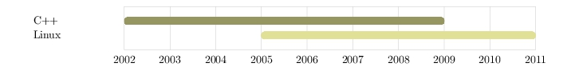
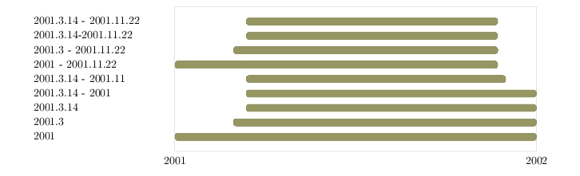
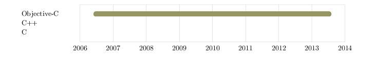
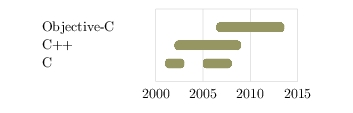
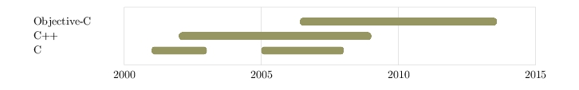

Create an input file, skills.txt, containing some date-based data:
Objective-C | lang | 2006.6 - 2013.7
C++ | lang | 2002 - 2008
C | lang | 2001 - 2002 | 2005 - 2007
Run tchart to read skills.txt and write generated TikZ code to skills.tikz:
$ tchart skills.txt skills.tikz
The generated TikZ code references the lang style name we specified
in skills.txt, as well as the xlabel style for the x axis labels,
the ylabel style for the y axis labels, and the gridline
style for the chart grid lines. Create a TeX document, styles.tikz, that defines
these styles:
% Style for x axis labels.
\tikzset{ xlabel/.style = {
text width = 10.00mm,
align = center,
inner sep = 0
}}
% Style for y axis labels.
\tikzset{ ylabel/.style = {
minimum height = 4.60mm,
text width = 24.00mm,
text depth = 0.5mm,
align = left,
inner sep = 0
}}
% Style for grid lines.
\tikzset{ gridline/.style = {
draw = black!20
}}
% Style for programming language ('lang') bars.
\definecolor{lang_color}{rgb}{.10, .32, .68}
\tikzset{ lang/.style = {
rounded corners = 1mm,
line width = 0.1pt,
draw = lang_color,
top color = lang_color,
bottom color = lang_color
}}
See pgfmanual.pdf
for more information on TikZ and styles (e.g. sections 2.8, 12.4.2, and 55.4.4).
Create a main TeX document, skills.tex, that includes (\input's) the TikZ library, the
styles.tikz file, and the generated skills.tikz file:
--help prints a usage message and exits. -h can also be used.
--version prints the tchart version and exits. -v can also be used.
input-data-filename is the name of a file containing date-based data, and
output-tikz-filename is the name of the a file where generated TikZ code
should be written. If output-tikz-filename already exists, it will be
silently overwritten. Both file names must be specified.
There are no restrictions on the file names other than those imposed by the operating system.
Although the examples in this document use .txt and .tikz as the extensions of the input and
output files, you can use any extensions you like (or none at all).
Input files consist of one or more lines where each line can be a comment, a blank line, a data
line, a separator line, or a setting:
# A comment.
# There are blanks lines above and below this line, and further down.
# A data line.
Objective-C | lang | 2006.6 - 2013.8
# A separator line.
-------------------------------------
# A setting.
chart_width = 164.99
Only line comments are supported (as opposed to multi-line block comments, such as C's /*...*/).
A comment can appear either on a line by itself or at the end of a line. The comment delimiter is #.
# This is a comment.
Objective-C | lang | 2006.6 - 2013.7 # This is another comment.
C++ | lang | 2002 - 2008
# C | lang | 2001 - 2002 | 2005 - 2007 # This line is commented out.
A data line represents something, a subject, that has a set of date ranges to be plotted on a row
on the chart. For example, I may have written C++ programs from 2001 to 2003, and 2004 to 2007,
and I would like to plot this. C++ is the subject of the row, and 2001 to 2003, and 2004 to 2007
are two date ranges that will appear as bars on the row.
A data line contains a description of the subject, which becomes the y axis label on the chart,
a style that defines how to draw the date range bars (i.e. what colour and shape the bars should
be, etc.), and one or more date ranges. Elements are separated by a | (pipe character).
Descriptions can contain spaces, although leading and trailing spaces are ignored.
# The description below has leading, trailing, and embedded spaces.
C & C++ | lang | 2001 - 2008 # The label used on the chart is "C & C++"
The tchart special characters # (hash, starts a comment) and | (pipe, field separator) can be
used in descriptions by escaping them with a \ (back slash). \ can be used by escaping it
with another \ .
C\# | lang | 2001 - 2007
Bo\|\|ean | lang | 2003 - 2005
Back\\slash | lang | 2004 - 2008
The bar style is the name of a TikZ style that must be defined in the TeX document that contains
the generated TikZ chart code. For example, we might have a file, chart.txt, that contains:
C++ | lang | 2002 - 2008
Linux | os | 2005 - 2010
The TeX document that includes the chart code must define the 'lang' and 'os' TikZ styles, perhaps
by including a separate file, or inline, as shown here:
...
% Style for programming language chart bars.
\definecolor{lang_color}{rgb}{0.59, 0.59, 0.39}
\tikzset{ lang/.style = {
rounded corners = 1mm,
line width = 0.1pt,
draw = lang_color,
top color = lang_color,
bottom color = lang_color
}}
% Style for operating systems chart bars.
\definecolor{os_color}{rgb}{0.88, 0.88, 0.59}
\tikzset{ os/.style = {
rounded corners = 1mm,
line width = 0.1pt,
draw = os_color,
top color = os_color,
bottom color = os_color
}}
...
\input chart.tikz
...

More information on TikZ styles can be found in
pgfmanual.pdf,
in particular sections 2.8, 12.4.2, and 55.4.4.
2001.3.14 - 2001.11.22 | lang | 2001.3.14 - 2001.11.22 # date format is yyyy.mm.dd
2001.3.14-2001.11.22 | lang | 2001.3.14-2001.11.22 # spaces around the '-' are optional
2001.3 - 2001.11.22 | lang | 2001.3 - 2001.11.22 # same as: 2001.3.1 - 2001.11.22
2001 - 2001.11.22 | lang | 2001 - 2001.11.22 # 2001.1.1 - 2001.11.22
2001.3.14 - 2001.11 | lang | 2001.3.14 - 2001.11 # 2001.3.14 - 2001.11.30
2001.3.14 - 2001 | lang | 2001.3.14 - 2001 # 2001.3.14 - 2001.12.31
2001.3.14 | lang | 2001.3.14 # 2001.3.14 - 2001.3.4
2001.3 | lang | 2001.3 # 2001.3.1 - 2001.3.31
2001 | lang | 2001 # 2001.1.1 - 2001.12.31
# make more room for the those long y axis labels, a setting that is described later
y_axis_label_width = 40

Dates are optional and if omitted result in the description appearing on the chart without
any bars. If no dates are supplied, then the style may be omitted as well, although it
will be ignored if included.
Objective-C | lang | 2006.6 - 2013.7
C++ | lang
C

The labels on the x axis are determined by the range of dates found in the data:
Separator lines are used to break subjects into sections by drawing a horizontal grid
line on the chart. They are specified by using a line starting with three dashes (minus signs), ---.
Objective-C | lang | 2006.6 - 2013.7
--- # Three dashes produce a separator.
PostgreSQL | db | 2004 - 2006
--- Anything after the first three dashes is ignored, so this is legal.
OS X | os | 2006.6 - 2013.7
------------------------------------- # A full line of dashes.
XCode | tool | 2006.6 - 2013.7
tchart makes no attempt to determine how much space text in the generated chart occupies and so
it uses default values for the overall width of the chart, the length of the y axis labels, and
so on. These default values can be overridden in the data file using settings. Settings are
of the form:
name = value
Spaces before and after name and value are ignored. The following two
lines are equivalent:
chart_width=100.5
chart_width = 164.99
Setting values are always in millimeters. They can appear anywhere in the data file, although
putting them at the top is likely the best place for them. If the same setting is specified more
than once, the last value listed is the one that is used:
chart_width = 100
chart_width = 60
chart_width = 80 # This is the value that will be used.
The settings and their default values are as follows:
Specifies the overall width of the chart (default 164.99mm). This includes the y axis labels,
the margins to the left and right of the x axis (the plot area), and the length of the x axis:
chart_width = 70
Objective-C | lang | 2006.6 - 2013.7
C++ | lang | 2002 - 2008
C | lang | 2001 - 2002 | 2005 - 2007

chart_width = 140
Objective-C | lang | 2006.6 - 2013.7
C++ | lang | 2002 - 2008
C | lang | 2001 - 2002 | 2005 - 2007
Specifies the width of the x axis labels (default 10mm). It is used by tchart to calculate the
left and right margins around the plot area only (each margin is 1/2 x_axis_label_width):
x_axis_label_width = 10
Objective-C | lang | 2006.6 - 2013.7
C++ | lang | 2002 - 2008
C | lang | 2001 - 2002 | 2005 - 2007

x_axis_label_width = 50
Objective-C | lang | 2006.6 - 2013.7
C++ | lang | 2002 - 2008
C | lang | 2001 - 2002 | 2005 - 2007